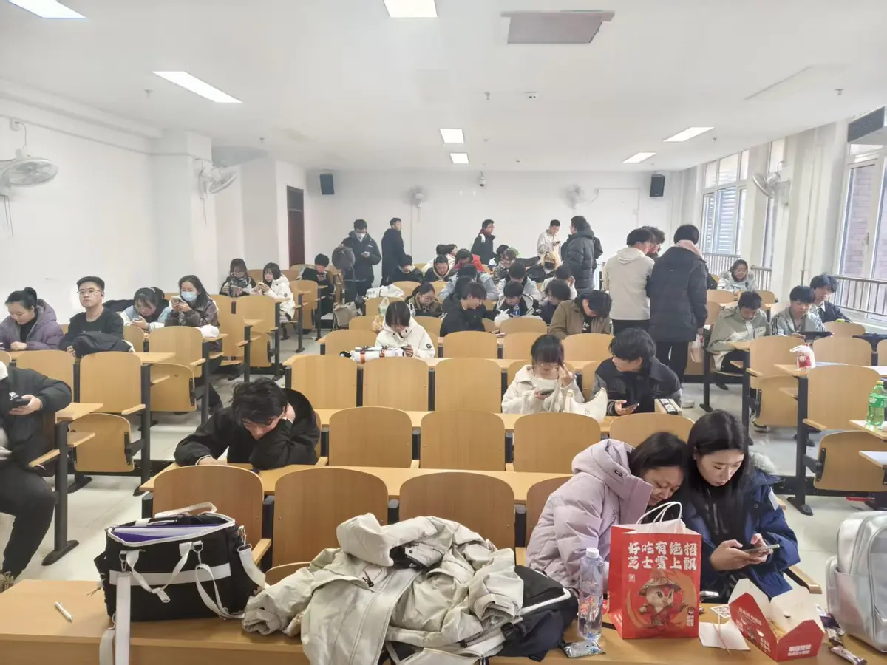
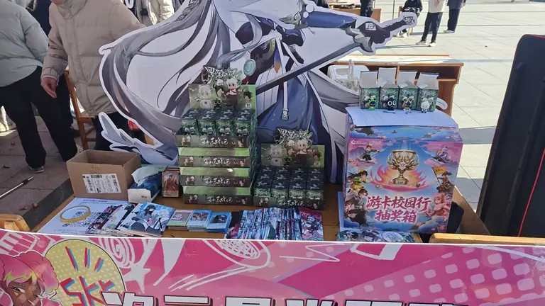
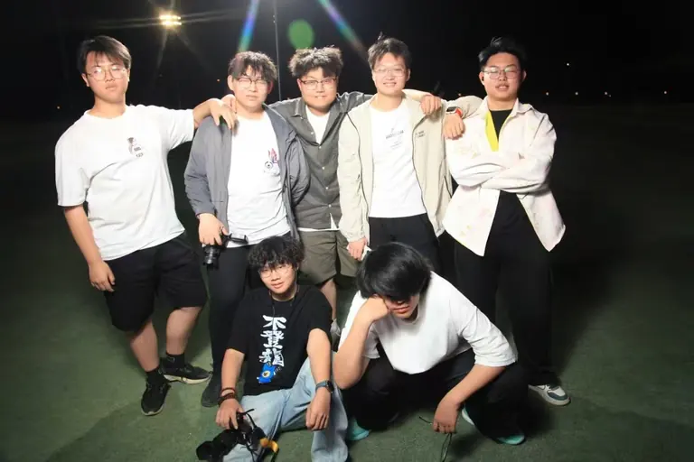
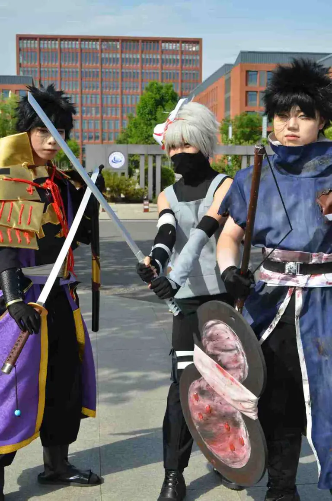

现任团支书
【团支书姓名】
负责社团的思想建设与组织生活，统筹跨社团协作与校级活动对接。
一个以动漫、Cos、摄影与桌游为载体的学生社团。这里写我们是谁、怎么把一场活动从想法做到落地。
Who we are
花忆动漫社是山西电子科技学院的学生社团，现有正式社员 110 余人，分别来自设计、艺术、摄影、配音等不同方向，分工明确，气氛融洽。
我们做的事不复杂：把喜欢的东西（番剧、Coser、桌游、周边）变成一场真的能办起来、能让别人也玩得开心的活动。一场活动从立项到归档，平均要跑一个多月。
一年多下来，我们办过漫展、桌游嘉年华、新老生见面会、校园寻春和社内桌游派对——五场活动，五份完整记录，也留下了一套能重复用的流程。


How we work
这套流程是五场活动一点点磨出来的，现在新社员照着做也能跑起来。
先想清楚这场活动解决什么——是破冰、是普及，还是把人聚起来。
视觉、物资、场地、宣传各自认领，关键节点两轮确认。
提前布场验物料，现场留一个总调度，突发情况有人接手。
当天收图、三天内写复盘，把经验留进下一次的清单里。
Departments
不设门槛，进来先玩，玩着玩着就会找到自己的位置。



Team
社团对外的事，找这两位同学就对了。
现任团支书
负责社团的思想建设与组织生活，统筹跨社团协作与校级活动对接。
现任负责人
负责社团日常运营与活动落地，分管四个部门，主持每一场活动的前后复盘。
人员信息以实际换届结果为准；联系方式只在社内公布，本站不公开个人联系方式。
Milestones
点任意一条，跳到那场活动的完整记录。
社团第一次办成规模的校园漫展。
十间教室同时开桌，多主题并行第一次跑通。
把「认识人」当成活动目标来设计。
活动第一次铺到整个校园，返图破百。
社内轻量场跑通，物资回收率 100%。